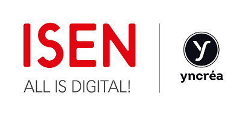

<div class="flex-container" fxLayout="row" fxLayout.xs="column" fxLayoutAlign="center none" class="fond">
  <div class="flex-item" fxFlex="20" fxLayout="column" fxLayoutAlign="center center" fxFlex.xs="100"></div>
  <div class="flex-item" fxFlex="70" fxLayout="column" fxLayoutAlign="center none" fxLayoutAlign.xs="none none">
    <div class="flex-item" fxFlex="15" fxFlex.xs="30" class="title">Virtual Machine for Remote System</div>
    <div class="flex-item" fxFlex="20" fxFlex.xs="40" class="subtitle">VMRS is a service which enable you to create, manage and use Virtual Machines from everywhere.</div>
    <div class="flex-item" fxFlex="5" fxFlex.xs="10" class="button-read-more"><button md-raised-button color="primary">READ MORE</button></div>
  </div>
</div>

<div class="flex-container" fxLayout="row" fxLayout.xs="column" fxLayoutAlign="space-around center" class="group-cards">
  <div class="flex-item" fxFlex="8"></div>
  <div class="flex-item" fxFlex="25" fxLayout="column" fxLayoutAlign="center center" class="cards">
    <div class="flex-item"><md-icon color="primary" style="font-size: 48px; padding-right: 20px">flash_on</md-icon></div>
    <div class="flex-item" class="title-card">Quick and Easy</div>
    <div class="flex-item" class="text-card">Creation of your Virtual Machines will be so much easy and you will be able to use it in a heartbeat.</div>
  </div> 
  <div class="flex-item" fxFlex="25" fxLayout="column" fxLayoutAlign="center center" class="cards">
    <div class="flex-item"><md-icon color="primary" style="font-size: 48px; padding-right: 20px">settings_system_daydream</md-icon></div>
    <div class="flex-item" class="title-card">Full of possibilities</div>
    <div class="flex-item" class="text-card">VMRS offer you a big choise of OS and linked applications.</div>
  </div>  
  <div class="flex-item" fxFlex="25" fxLayout="column" fxLayoutAlign="center center" class="cards">
    <div class="flex-item"><md-icon color="primary" style="font-size: 48px; padding-right: 20px">data_usage</md-icon></div>
    <div class="flex-item" class="title-card">Safety</div>
    <div class="flex-item" class="text-card">All your informations will be secured. You are the only one who can access to your VM and your data.</div>
  </div> 
  <div class="flex-item" fxFlex="8"></div>  
</div>

<div class="flex-container" fxLayout="row" fxLayoutAlign="none center" class="fond-mobile">
  <div class="flex-item" class="title-mobile">Delivered with a mobile solution.</div>
</div>

<div class="flex-container" fxLayout="row" fxLayout.xs="column" fxLayoutAlign="center center" class="fond-isen">
  <div class="flex-item" fxFlex="30" fxLayout="column" fxLayoutAlign="center center"></div>
  <div class="flex-item" fxFlex="60" fxLayout="column" fxLayoutAlign="none none" class="title-isen">Made by 4 engineer school students for their end of school programming project.</div>
</div>

<app-footer></app-footer>